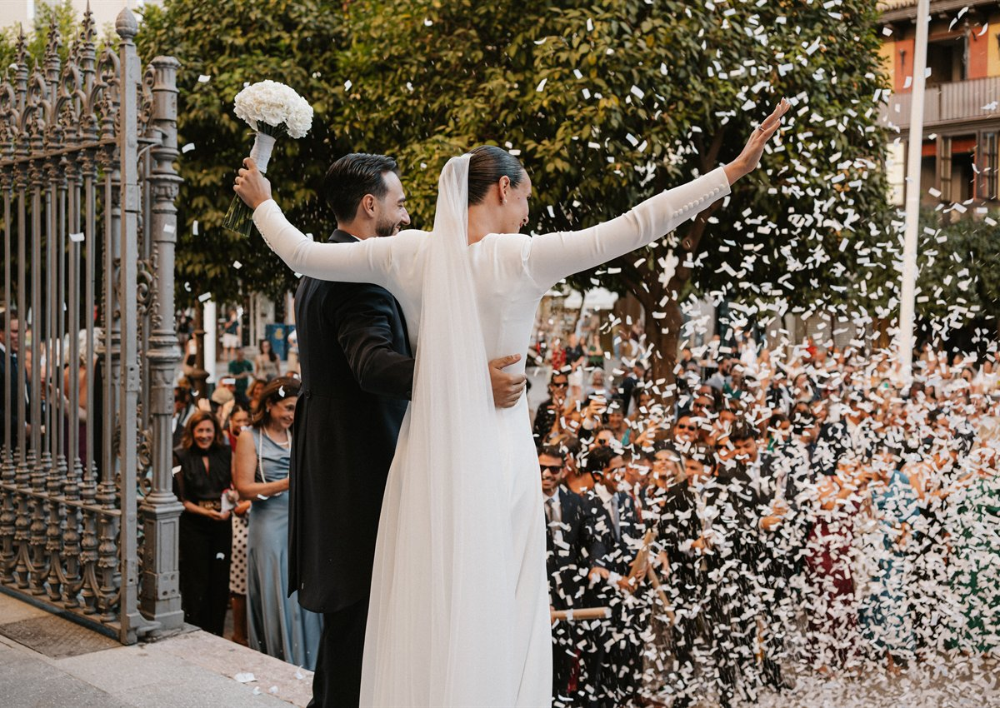

01
Organización integral
Para novios que quieren disfrutar del proceso sin preocuparse por la logística ni el estrés de los preparativos.
- Contacto continuo y asesoría personalizada.
- Diseño del concepto, estilo y ambientación.
- Búsqueda, gestión y seguimiento de proveedores.
- Planificación, cronograma y logística del gran día.
1.850€ + IVA